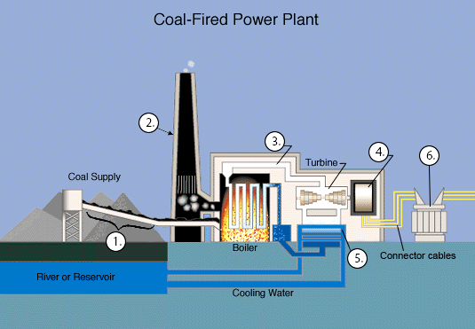

As you know, the best way of improving your IELTS Reading skills is practice. In this exercise you will practise IELTS Reading diagram completion, namely labeling the process.
Your answering strategy:
- Read the text, underlining the new terms and important names.
- Look at the diagram and think which parts of it you can label.
- Check your assumptions by looking back at underlined terms and label the parts you're sure of.
Practice
Read the text and label the diagram below.
How coal-fired power plants work?
Modern life is unimaginable without electricity; and coal plays a vital role in electricity generation worldwide. Coal-fired power plants currently fuel 41% of global electricity and, in some countries, coal fuels a higher percentage of electricity. But how is coal converted to electricity?
Steam coal, also known as thermal coal, is used in power stations to generate electricity. After coal supply is extracted from the carrier, coal is milled to a fine powder, which increases the surface area and allows it to burn more quickly. In such pulverised coal combustion systems, the powdered coal is transported from the coal supply station into a boiler by a conveyor belt. In the boiler the coal is burnt at high temperature. The hot gases arise from the burning coal and the produced heat energy converts water - in tubes lining the boiler - into steam. Meanwhile the gases released during the burning process exit the coal combustion system by a stack - a long tube attached to the boiler.
Next, the high pressure steam is passed by the steam line into a turbine. The turbine contains thousands of propeller-like blades, which are pushed by the steam. This causes the turbine shaft to rotate at high speed. A generator is mounted at one end of the turbine shaft and consists of carefully wound wire coils. Electricity is generated when these are rapidly rotated in a strong magnetic field. After passing through the turbine, the steam is condensed in a special room under the turbine called condenser. The condenser is connected to a reservoir of cooling water, so that the condensed steam cools quickly and returns to the boiler to be heated once again.
The electricity is transported from the generator by connector cables to a switchyard, where it is transformed into the higher voltages (up to 400,000 volts) used for economic, efficient transmission via power line grids. When it nears the point of consumption, such as our homes, the electricity is transformed down to the safer 100-250 voltage systems used in the domestic market.
Label the diagram of electricity generation process below.
Write NO MORE THAN TWO WORDS from the passage for each answer. Do not write articles.
